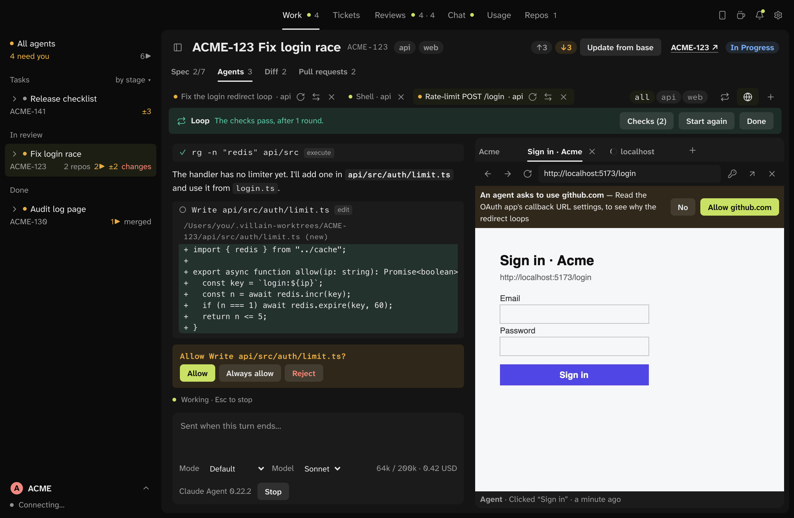
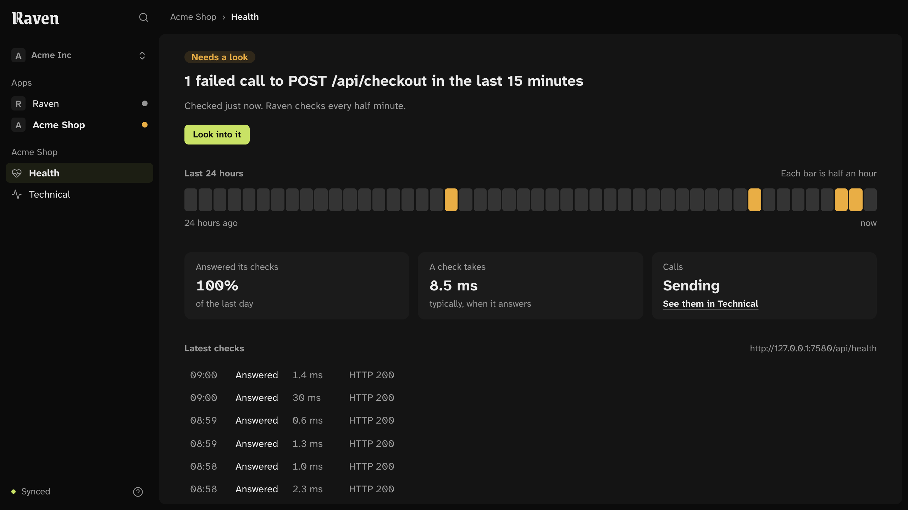
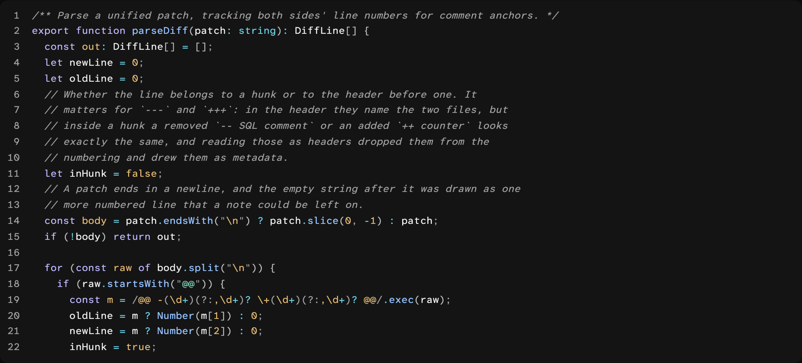

Forge
AI-first issue tracker

An issue tracker that keeps issues, specs and decisions side by side, and lets coding agents work in it as members of the team.
More on ForgeAI-first issue tracker
An issue tracker that keeps issues, specs and decisions side by side, and lets coding agents work in it as members of the team.
More on ForgeAgent development environment for macOS

A Mac app for coding agents, where no agent holds your credentials.
More on LayerLauncher for macOS


Apps, calculations, and quick answers. A shortcut away.
More on CasterTranslation with models you run yourself

Translates an app’s strings with models you run yourself. A team reviews what they propose before it ships.
More on GlyphObservability for the studio’s apps

Whether an app is up, how each action behaves, and where a slow call spent its time.
More on RavenEditor and terminal theme, in night and day

VS Code, Cursor, Neovim, WezTerm, and the Starship prompt, in Nightshade’s colours for code.
More on Code Villain